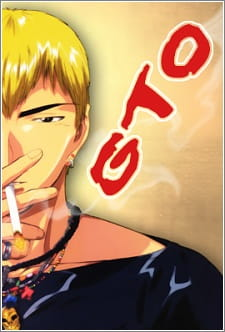

My favorite video games of all times.
They are all great so can't really make an order out of them!
- Great Teacher Onizuka
- Hajime no Ippo
- Bleach
- Jojo series
Genre: Comedy, Drama // More info
Twenty-two-year-old Eikichi Onizuka—ex-biker gang leader, conqueror of Shonan, and virgin—has a dream: to become the greatest high school teacher in all of Japan.
This isn't because of a passion for teaching, but because he wants a loving teenage wife when he's old and gray.
Still, for a perverted, greedy, and lazy delinquent, there is more to Onizuka than meets the eye.
Genre: Sports // More info

In his father's absence, teenager Ippo Makunouchi works hard to help his mother run her fishing boat rental business.
Ippo's timid nature, his lack of sleep, and the sea smell make him an easy target for relentless bullies who leave him bruised and beaten on a daily basis
Mamoru Takamura, an up-and-coming boxer, rescues Ippo from a violent after-school incident and takes him back to the Kamogawa Boxing Gym
Genre: Action, Adventure, Fantasy // More info

Ichigo Kurosaki is an ordinary high schooler—until his family is attacked by a Hollow, a corrupt spirit that seeks to devour human souls.
It is then that he meets a Soul Reaper named Rukia Kuchiki, who gets injured while protecting Ichigo's family from the assailant.
To save his family, Ichigo accepts Rukia's offer of taking her powers and becomes a Soul Reaper as a result.
Genre: MMORPG // More info

The year is 1868; English nobleman George Joestar and his son Jonathan become indebted to Dario Brando after being rescued from a carriage incident.
What the Joestars don't realize, however, is that Dario had no intention of helping them; he believed they were dead and was trying to ransack their belongings.
After Dario's death 12 years later, George—hoping to repay his debt—adopts his son, Dio. While he publicly fawns over his new father, Dio secretly plans to steal the Joestar fortune.